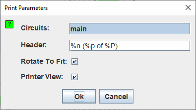

印刷
当您选择 | Print... | 时，Logisim-evolution 将显示一个用于配置打印内容的对话框。

打印配置
- 电路：一个列表，您可以在其中选择一个或多个要打印的电路。 （空电路不会显示为选项。）Logisim 将每页打印一个电路。 如果电路对于页面来说太大，图像将按比例缩小以适应。
-
标题：应显示在每页顶部居中的文本。 文本中将进行以下替换。
%n 页上电路名称 %p 页码 %P 总页数 %% 单个百分号 ('%') - 旋转以适合：如果选中，则当电路太大而无法适应页面时，Logisim-evolution 会将每个电路旋转 90 度，并且旋转 90 度时不需要缩放得那么小。
- 打印机视图：打印电路时是否使用“打印机视图”。

单击 OK 后，Logisim-evolution 将在打印电路之前显示标准页面设置对话框。